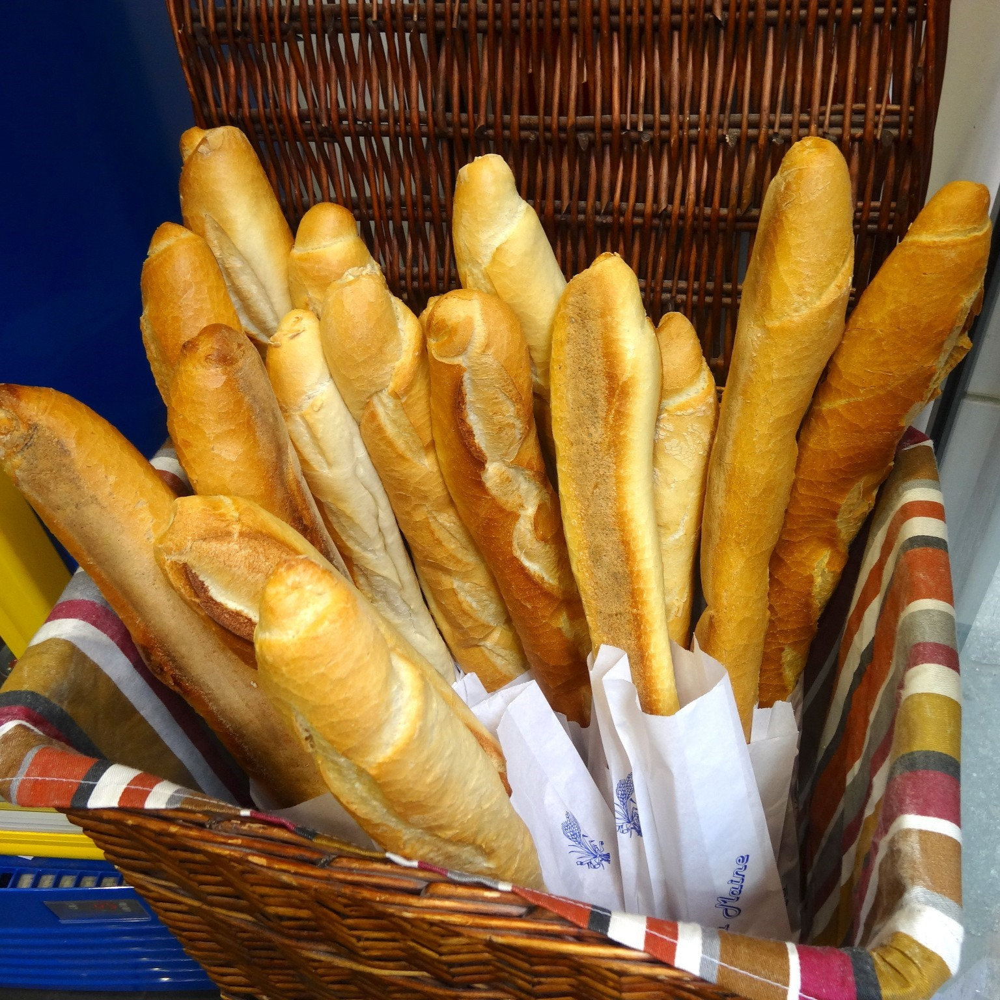

บาแกตต์

ส่วนผสม
⋆ แป้งสาลีดูรัม 300 กรัม
⋆ แป้งขนมปัง 225 กรัม
⋆ เกลือป่น 1/2 ช้อนชา
⋆ ยีสต์ 1 ช้อนโต๊ะ
⋆ น้ำตาลทราย 20 กรัม
⋆ น้ำเย็น 300 มิลลิลิตร
⋆ น้ำมันรำข้าว 35 กรัม
⋆ แป้งสาลีดูรัม สำหรับคลุก
วิธีทำ
1) เตรียมอ่างผสม ใส่แป้งขนมปัง แป้งสาลีดูรัม เกลือป่น ยีสต์ น้ำตาลทราย
น้ำเย็น และน้ำมันรำข้าว จากนั้นตีแป้งประมาณ 10นาที
2) รวบแป้งให้หน้าตึง พักแป้งประมาณ 30-60นาที หรือจนกว่าแป้งจะฟูขึ้นเป็น 2เท่า
3) พอแป้งขึ้นฟูแล้วแบ่งแป้งเป็น 8ส่วนเท่าๆ กัน
4) นำมาคลุกแป้งสาลีดูรัม รีดเป็นแผ่น ม้วนให้แน่น
5) วางลงไปในพิมพ์พ์บาแกตต์ พักให้ขึ้นฟูประมาณ 80% จากนั้นกรีดประมาณ 3-4บั้ง
6) นำไปอบที่อุณหภูมิ 175องศาเซลเซียส ใช้ไฟบน-ล่าง เป็นเวลา 25-30นาที